Os PNGs originais não foram alterados. Use o zoom ou a alternância para inspecionar os mesmos recortes, nas mesmas coordenadas.
As notas SSIM pertencem às faixas completas da auditoria; não foram recalculadas nos recortes centrais. O valor de referência é 0,98.
Atenção ao P20: a faixa auditada contém parte do tick 0,08 do eixo Y, cuja escala muda com Q20. Esse trecho não pertence ao título. Em Graphs, também podem aparecer marcadores próximos ao topo.
0,08
SSIM da região original: 0.979338 · referência: 0,980000
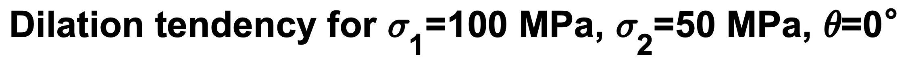
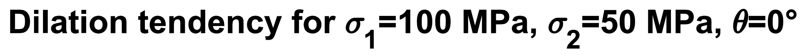
PNG MATLAB completo · PNG Python completo · Prancha comparativa
SSIM da região original: 0.979891 · referência: 0,980000
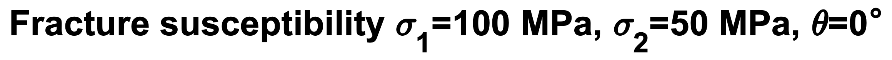
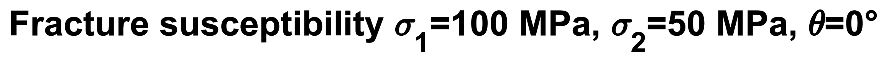
SSIM da região original: 0.976113 · referência: 0,980000
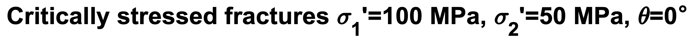
SSIM da região original: 0.972508 · referência: 0,980000
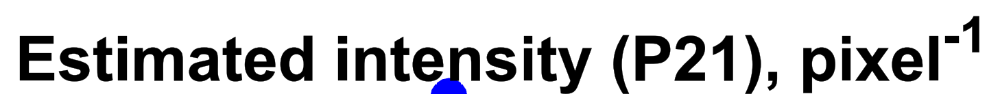
SSIM da região original: 0.972114 · referência: 0,980000
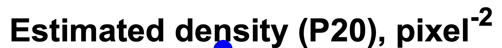
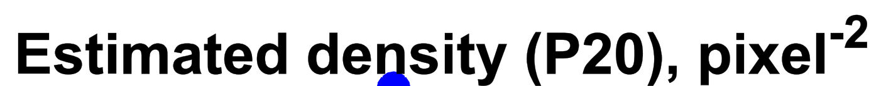
SSIM da região original: 0.955917 · referência: 0,980000
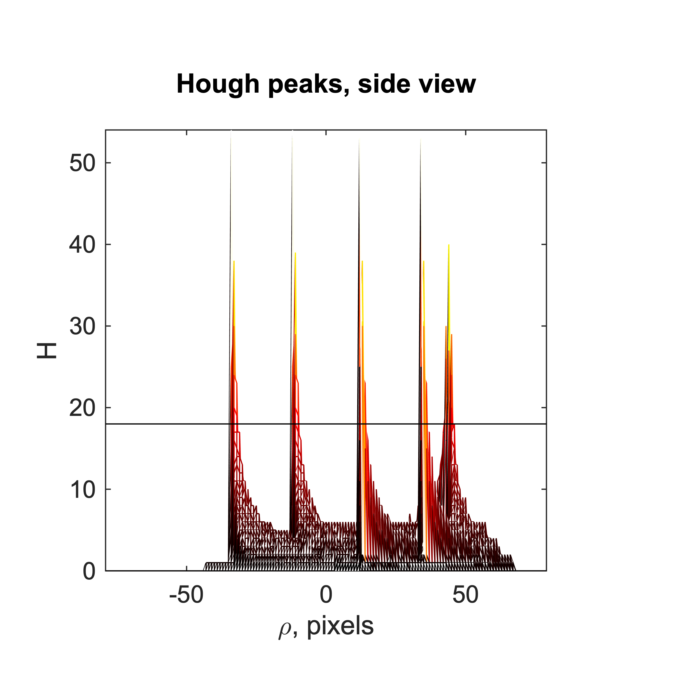
SSIM da região original: 0.937944 · referência: 0,980000
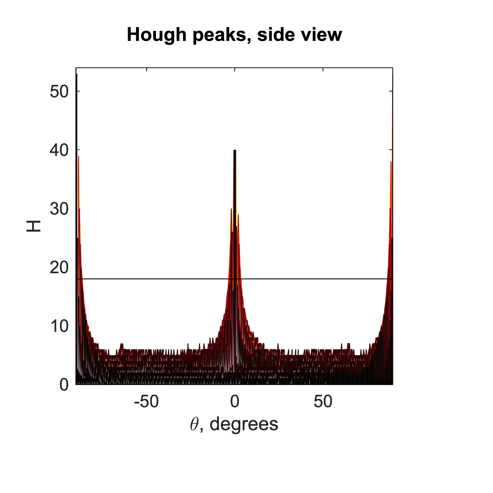
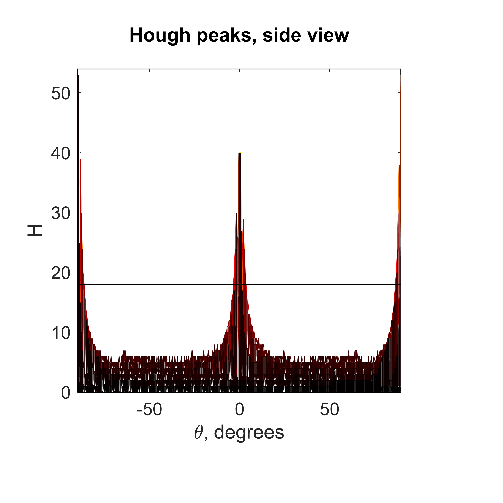